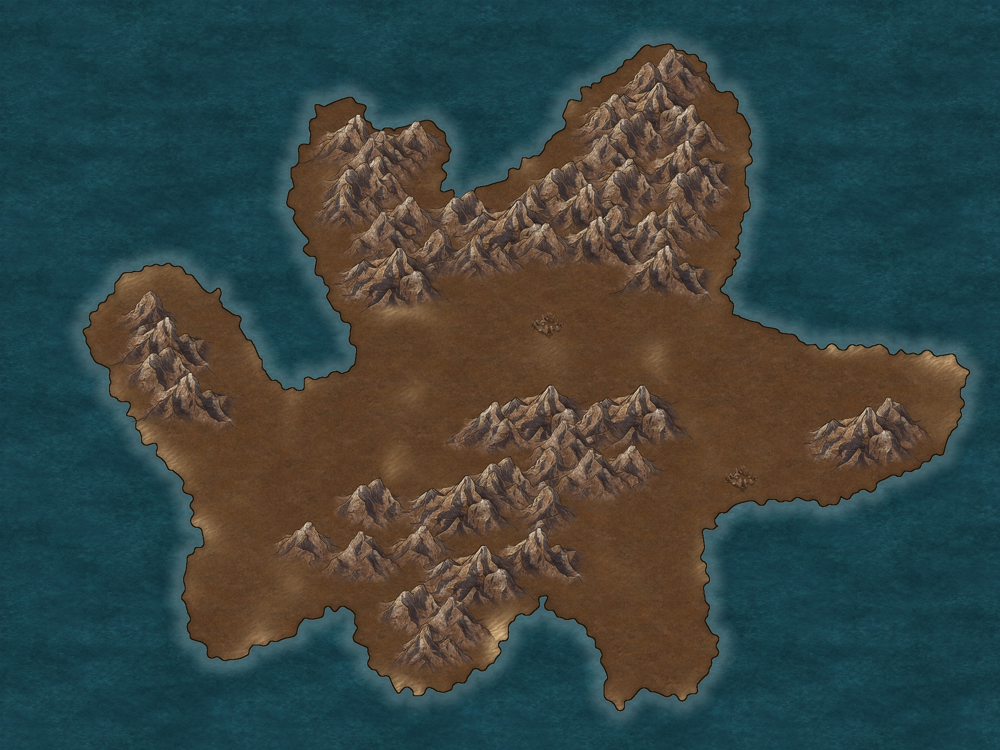
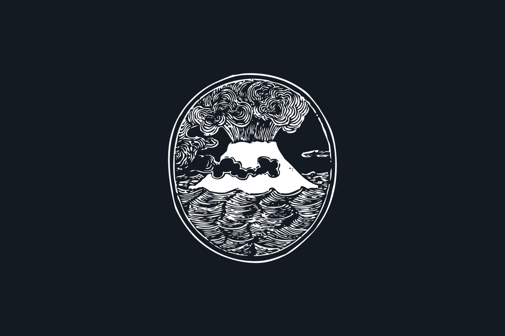

Ce territoire était autrefois appelé différemment.
Son ancien nom est maintenant proscrit des langages et manuscrit, puisqu'on raconte qu'il déchaînerait une malédiction sur quiconque le prononce.
Je vais néanmoins vous l'inscrire ici :
Ragnarök.
L'espèce qui y vivait est désormais disparue.
Leur dernière dirigeante étaient une présidente, dénommée Uenas Evaznir.
C'était une femme à la longévité incroyable, très protectrice envers son peuple, mais qui connu une fin plus que sinistre.
Les livres d'histoire ne s'étalent jamais sur les raisons de la catastrophe ayant détruit ce pays, mais les légendes et rumeurs se trouvent être plus bavardes.
On raconte que, après s'être perdue dans les méandres de la magie noire et dans les pactes de sang afin de s'offrir la vie éternelle, à elle et à son peuple, ainsi qu'une puissance surmontant tout de connu en ce monde, elle déclencha malencontreusement une malédiction à la hauteur de ses pouvoirs récemment acquis.
Cette malédiction s'abattit alors sur son pays et ses habitants, rendant infertile toute terre et toute créature, les déformant lentement, créant des monstres impies, dénaturés, horrifiques.
